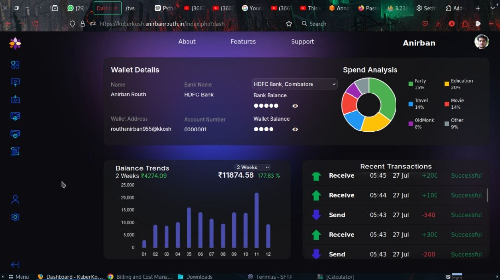
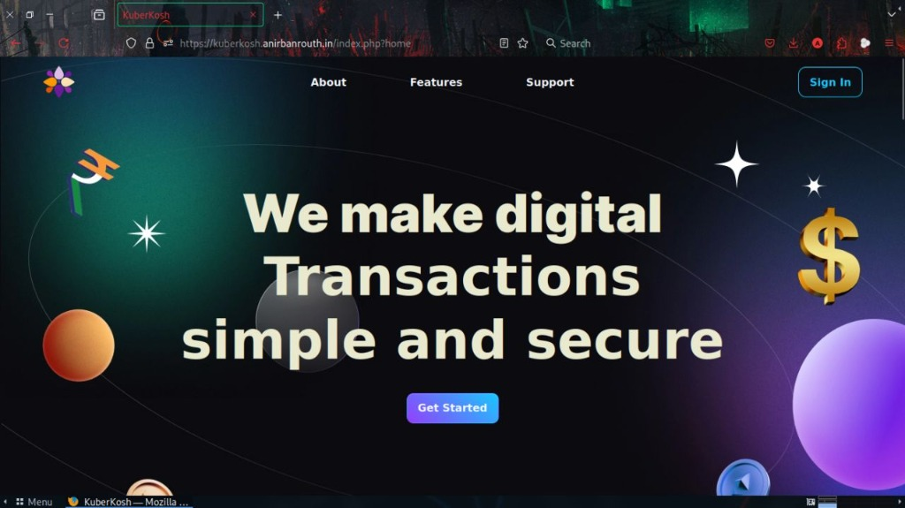
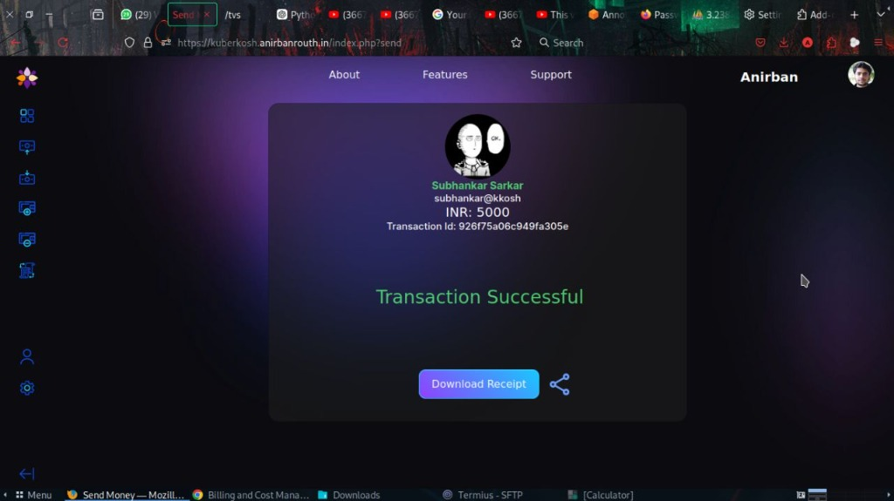

Web application
KuberKosh
Simple and Secure Digital Wallet
KuberKosh is a modern, web-based digital wallet application optimized for seamless, convenient peer-to-peer microtransactions and smart expense tracking. By enabling users to top up their wallet from linked bank accounts, KuberKosh eliminates the chaos of micro-payments cluttering up official bank statements. It pairs ultra-fast transaction steps with an institutional-grade security framework and powerful financial visualization tools.
- Web Wallet
- Completed
- Docker Compose



Why it exists
The problem and the solution
The Core Challenges
- Vulnerable Logins & Interceptions: Simple web apps frequently transmit unhashed credentials or expose session variables to interception.
- Cluttered Bank Statements: Buying snacks, street food, or paying minor utility bills fills bank logs with dozens of tiny entries.
- Financial Blind Spots: Most everyday payment tools provide no immediate summary of lifestyle category spends.
The KuberKosh Fix
- Cryptographic Vault Access: Implements a three-layered guard—Google OAuth2, localized TOTP Multi-Factor Authentication, and zero-plaintext client-side SHA-256 PIN hashing.
- Isolated Wallet Architecture: Moves everyday micro-payments off bank servers into a secure relational database sandbox, grouping funding and withdrawal records cleanly.
- Instant Analytics Engine: Dynamically renders real-time budget category percentages and multi-timeframe balance trends right on the primary viewport.
Features
Features
Unified Analytics Dashboard
- Visibility Toggle: Obfuscate sensitive balances instantly with a visibility toggle icon in public areas.
- Spend Analysis Ring: JavaScript donut chart detailing category expenditures (Education, Party, Travel, Movie).
- Balance Trend Metric: Bar chart mapping wallet equity changes over custom periods (1 Week, 1 Month).
Secure Funds Routing
- Pre-Validated Linking: Pairs bank accounts to the wallet using explicit confirmation prompts.
- Secure Cash-Out: Withdrawals to primary bank accounts trigger modals requiring SHA-256 PIN verification.
Smart Peer-to-Peer Transfers
- Zero-Reload Verification: Asynchronous AJAX queries resolve and verify receiver wallets to prevent user entry errors.
- Encrypted PDF Receipts: Generates downloadable PDF transaction records with SHA3-256 vouchers.
Interactive Request Engines
- Dynamic QR Generation: Encodes specific billing amounts and descriptions into QRCodes, autofilling sender portals upon scanning.
Technology
Tech stack
| Component | Technology Selected | Purpose & Justification |
|---|---|---|
| Backend Architecture | PHP (Server-side core) | Highly reliable request handling, native session protection, and smooth relational database connectivity. |
| Database System | MariaDB + phpMyAdmin | High-performance relational indexing structured in 3rd Normal Form (3NF) to protect data records against collision or latency. |
| Frontend Foundation | HTML5, SCSS, JavaScript | Implements fluid layouts compiled using Webpack and automated via Gulp workflows. |
| UI Framework | Bootstrap 5 | Built from the ground up for dynamic responsiveness across desktop and mobile devices. |
| Security Layer | Google OAuth, TOTP, SHA-256 | Two-factor protection leveraging RFC 6238 time-aligned authenticator keys alongside end-to-end HTTPS. |
| Infrastructure & Cloud | Docker, AWS EC2, Cloudflare | Containerised microservices hosted on stable cloud environments with built-in proxy edge protection against layer-7 DDoS traffic. |
| Dynamic Engines | TCPDF, QRCode.js | Direct runtime PDF compilation for transaction vouchers alongside client-rendered base-64 string QR patterns. |
Reliability
Edge cases
Client- and server-side data verification rules for absolute reliability.
Zero-ValueSanitizationBoundariesClock ShiftWhat's next
Future scope
AI Financial Guidance
Integrating machine learning layers to scan transaction properties over time, providing users with proactive budgeting advice and optimization strategies.
Anomaly Defense Matrices
Incorporating AI-driven risk scoring profiles to recognize sudden geographic shifts or unusual transaction velocity pattern variations dynamically.
Distributed Ledgers
Investigating transition mechanisms toward cryptographic verification protocols to create decentralized, tamper-proof transaction logs.
Comprehensive Third-Party APIs
Deploying extensive, open-access developer API modules so external applications can natively interface with and accept KuberKosh transactions.
FAQ
Frequently asked questions
How does KuberKosh handle user passwords securely?
Because user authentication passes securely through official Google OAuth2 validation layers, KuberKosh never reads, parses, or tracks password credentials locally on its application instances.
Why does the wallet ask for an authentication PIN if it's already guarded by TOTP?
TOTP forms a barrier during standard session validation phases to prevent account takeovers. The six-digit wallet PIN exists as an independent authorization step designed explicitly to sign actual transaction properties.
How do the microtransactions protect my primary bank logs?
When loading cash into KuberKosh, your banking ledger registers only a single bulk record. All subsequent small transactions occur cleanly inside the separate wallet environment, preventing statement clutter.
What happens if a transfer is initiated during a sudden network interruption?
The system handles transaction logs systematically. Before any balance is modified, a unique, deterministic transaction ID is generated via a SHA3-256 hash using the sender, receiver, amount, and timestamp metrics. If a system failure or network dropout occurs mid-execution, the database engine rolls back the operations, and the transaction is logged in the transaction_logs table with a status of "Failed" and the corresponding error details for auditing.
Why was MariaDB selected over other options like MongoDB or PostgreSQL?
Relational integrity and financial accounting precision require absolute ACID compliance. MariaDB provides a robust, high-performance relational database management system structured in a 3rd Normal Form (3NF) normalized database schema. This architecture ensures complete data integrity, prevents duplicate transaction redundancy, and handles standard sub-queries and table joins far more efficiently than NoSQL alternatives.
How does the application prevent cross-site scripting (XSS) and SQL injection vulnerabilities?
KuberKosh follows OWASP core security guidelines to safeguard the data pipeline. For database communication, the backend relies completely on prepared statements via mysqli ($stmt->prepare) and parameterized data binding ($stmt->bind_param), rendering SQL injection vectors impossible. Furthermore, strict server-side and client-side parameter sanitization filters are implemented to clean incoming integer inputs and block potential payload insertions.
How does the QR Code request system securely transmit data to the payer?
The application does not store temporary request sessions on the server for standard request links. Instead, when a user creates a payment request, all query parameters—including the target wallet address, amount, purpose, and remarks—are natively encoded directly into URL parameters processed via QRCode.js on the client side. When scanned by the payer, the system decodes the string and dynamically pre-fills the standard "Send Money" form securely, keeping the handshake lightweight and fast.
What testing strategy was used to validate the core financial logic?
The testing phase utilized a multi-tier framework consisting of unit testing, integration testing, and automated vulnerability scanning. Individual functional components were validated via unit tests, while systemic module handshakes were targeted via integration tests. To guarantee security testing across raw HTTP data boundaries, BurpSuite was deployed as an intercepting proxy to capture, parse, and analyze traffic requests between the browser viewport and server endpoints—allowing the verification of edge cases like character-injected transaction values and negative amount limits.
For developers
Run it locally
Launch container environment and tooling.
Local Deployment
Standard PHP/Apache2 container network environment
- Requires Node.js & npm installed locally
- Gulp SCSS/sass compilation pipeline toolchain
- Docker CLI & Docker Compose container engines
- GPG & Pass Password Store for credentials vault
Quick launch commands
-
Clone & enter repository:
git clone https://github.com/anirban1011/KuberKosh.git cd KuberKosh -
Install dependencies & SCSS:
npm install npm install --save-dev gulp-sass sass npm start -
Initialize credentials vault:
gpg --generate-key pass init <gpg-key-id> -
Launch containers:
docker-compose up -d --build -
Access dashboard:
Navigate browser to
http://localhost:8080

Built by Anirban Routh
Full-stack developer building web apps, Android apps and automation tools. MCA student at the University of North Bengal.